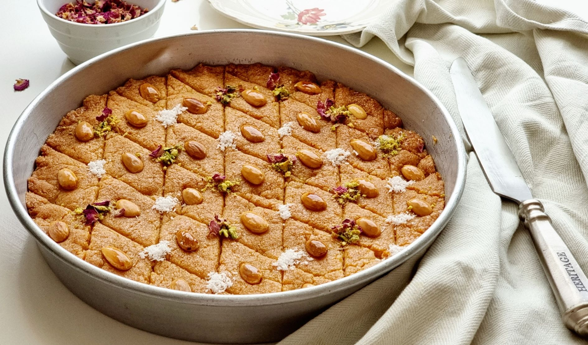

Home
Basbousa

Description
Basbousa is a sweet Middle Eastern dessert made from semolina and soaked in sugar syrup.
It has a soft, crumbly texture and is often topped with almonds or coconut.
Ingredients
- 1 cup semolina
- 1 cup sugar
- 1 cup yogurt
- 1/2 cup coconut
- 1/2 cup melted butter
- 1 tsp baking powder
- Sugar syrup (as needed)
Steps
- Preheat oven to 180°C.
- Mix all ingredients in a bowl.
- Pour mixture into greased baking dish.
- Bake for 30–35 minutes until golden.
- Pour cold syrup over hot Basbousa.